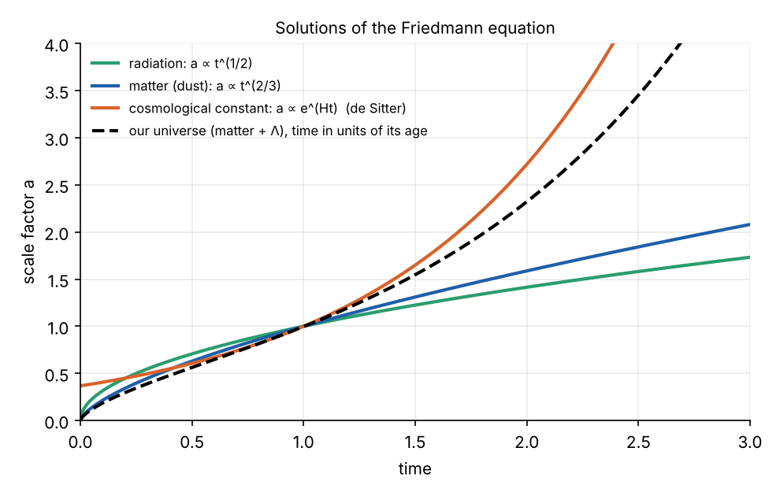

- Manifolds
- Tensors
- The metric and spacetime
- Connections and geodesics
- Curvature
- Einstein’s equations (this part)
- de Sitter and anti-de Sitter, solved
Parts 1 to 5 built the geometry: a manifold, a metric, its connection and its curvature. Part 4 gave the law of motion: free fall is geodesic. What is missing is the law that says how matter and energy shape the metric. John Wheeler’s summary is the standard one: spacetime tells matter how to move; matter tells spacetime how to curve.
The source: stress-energy
In Newtonian gravity, the source is the mass density \(\rho\). In relativity, mass is one form of energy, and energy density is not a scalar: it is one component of a tensor that also contains momentum density, energy flux and stress.
\(T^{\mu\nu}\) is a symmetric \((2, 0)\) tensor. For an observer with four-velocity \(u^\mu\), \(T_{\mu\nu}u^\mu u^\nu\) is the energy density they measure, and the other components give the flux of momentum component \(\mu\) across a surface of constant \(x^\nu\).
For a perfect fluid, with density \(\rho\) and pressure \(p\) in its rest frame,
\[ T^{\mu\nu} = \left(\rho + \frac{p}{c^2}\right)u^\mu u^\nu + p\,g^{\mu\nu} . \]
Dust is the case \(p = 0\). Conservation of energy and momentum, which in special relativity is \(\partial_\mu T^{\mu\nu} = 0\), becomes in curved spacetime
\[ \nabla_\mu T^{\mu\nu} = 0 . \]
This is the minimal-coupling rule: write the special-relativistic law in tensor form, then replace \(\eta\) by \(g\) and \(\partial\) by \(\nabla\). It is local conservation only. In general there is no conserved total energy of a curved spacetime, because the covariant divergence does not integrate to a conservation law without a symmetry.
Finding the field equation
The equation should:
- be a tensor equation, so it holds in every chart (Part 2);
- relate curvature to \(T_{\mu\nu}\), a symmetric \((0, 2)\) tensor, so its left side must be one too;
- contain at most second derivatives of the metric, like every other field equation in physics;
- be consistent with \(\nabla^\mu T_{\mu\nu} = 0\), so its left side must be divergence-free;
- reduce to Newton’s \(\nabla^2\Phi = 4\pi G\rho\) for weak fields and slow matter.
One of Einstein’s attempts, in early November 1915, was \(R_{\mu\nu} \propto T_{\mu\nu}\). It fails the fourth condition: the Ricci tensor’s divergence is not zero, so this equation would force \(\nabla_\mu R = 0\), and hence the trace \(T\) of the stress-energy to be constant throughout spacetime, which is false for any star. Part 5’s contracted Bianchi identity supplies the fix: the Einstein tensor \(G_{\mu\nu} = R_{\mu\nu} - \frac12 R\,g_{\mu\nu}\) is divergence-free for every metric. On 25 November 1915, Einstein arrived at
\[ \boxed{G_{\mu\nu} + \Lambda g_{\mu\nu} = \frac{8\pi G}{c^4}\,T_{\mu\nu} .} \]
The term \(\Lambda g_{\mu\nu}\), which he added in 1917, is also divergence-free, because \(\nabla g = 0\).
There was no other choice. David Lovelock proved in 1971 that in four dimensions, the only symmetric, divergence-free \((0, 2)\) tensors built from the metric and its first two derivatives are \(a\,G_{\mu\nu} + b\,g_{\mu\nu}\). Conditions 1 to 4 fix the left side up to two constants. Condition 5 fixes one of them, and \(\Lambda\) is the other.
The Newtonian limit fixes the constant
Take the trace of the field equation with \(\Lambda = 0\). Since \(g^{\mu\nu}g_{\mu\nu} = 4\), the trace of \(G_{\mu\nu}\) is \(R - 2R = -R\), so \(R = -\kappa T\) with \(\kappa = 8\pi G/c^4\). Substituting back gives the trace-reversed form
\[ R_{\mu\nu} = \kappa\left(T_{\mu\nu} - \tfrac12 T\,g_{\mu\nu}\right). \]
For slow dust, \(T_{00} \approx \rho c^2\) and \(T \approx -\rho c^2\), so the right side of the time–time component is \(\kappa\,\rho c^2/2 = 4\pi G\rho/c^2\). For the weak-field metric of Part 4, with \(g_{00} = -(1 + 2\Phi/c^2)\), the library gives, to first order in \(\Phi\) (test_gr.py),
\[ R_{00} = \frac{\nabla^2\Phi}{c^2} . \]
Equating the two gives \(\nabla^2\Phi = 4\pi G\rho\): Newton’s law of gravity. The constant \(8\pi G/c^4\) is exactly what is needed for this to come out right. It is tiny, about \(2 \times 10^{-43}\) s² kg⁻¹ m⁻¹, which is why spacetime is so stiff and gravity so weak.
Vacuum and the Schwarzschild solution
Outside matter, \(T_{\mu\nu} = 0\), and with \(\Lambda = 0\) the trace-reversed form gives the vacuum equations
\[ R_{\mu\nu} = 0 . \]
This does not make spacetime flat. The Ricci tensor is 10 of the Riemann tensor’s 20 components. The other 10, the Weyl tensor, are free to be non-zero, and describe tides and gravitational waves (Part 5).
The first exact solution was found by Karl Schwarzschild in 1916, weeks after the field equations were published, while he was serving on the Russian front:
\[ ds^2 = -\left(1 - \frac{r_s}{r}\right)c^2dt^2 + \frac{dr^2}{1 - r_s/r} + r^2\left(d\theta^2 + \sin^2\theta\,d\phi^2\right), \qquad r_s = \frac{2GM}{c^2}. \]
The library confirms that every component of its Ricci tensor is zero. By Birkhoff’s theorem, it is the unique spherically symmetric vacuum solution, so it describes the outside of any spherical star or planet, and a black hole. Far away, \(g_{00} \approx -(1 + 2\Phi/c^2)\) with \(\Phi = -GM/r\), Newton’s potential.
The cosmological constant
Moving \(\Lambda\) to the right side shows what it is physically:
\[ G_{\mu\nu} = \kappa\left(T_{\mu\nu} + T^{(\Lambda)}_{\mu\nu}\right), \qquad T^{(\Lambda)}_{\mu\nu} = -\frac{\Lambda c^4}{8\pi G}\,g_{\mu\nu} . \]
This is a perfect fluid with energy density \(\rho_\Lambda c^2 = \Lambda c^4/8\pi G\) and pressure \(p = -\rho_\Lambda c^2\). It is the same for every observer, because it is proportional to the metric: it is the energy of empty space. Its negative pressure makes it gravitationally repulsive, and when it dominates, expansion accelerates. Part 7 solves the equations with only this term.
The action
The field equations also follow from a variational principle, as Hilbert showed in November 1915. The Einstein–Hilbert action is
\[ S = \frac{c^4}{16\pi G}\int (R - 2\Lambda)\sqrt{-g}\;d^4x \;+\; S_\text{matter} , \]
with the invariant volume element of Part 3. Varying the inverse metric, and using \(\delta\sqrt{-g} = -\frac12\sqrt{-g}\,g_{\mu\nu}\,\delta g^{\mu\nu}\) and \(\delta R = R_{\mu\nu}\,\delta g^{\mu\nu} + (\text{a total divergence})\), gives
\[ \delta S = \frac{c^4}{16\pi G}\int\left(R_{\mu\nu} - \tfrac12 R\,g_{\mu\nu} + \Lambda g_{\mu\nu}\right)\delta g^{\mu\nu}\sqrt{-g}\,d^4x + \delta S_\text{matter} . \]
Defining \(T_{\mu\nu} = -\frac{2}{\sqrt{-g}}\frac{\delta S_\text{matter}}{\delta g^{\mu\nu}}\), setting \(\delta S = 0\) gives the field equations. The action form shows that the Ricci scalar, the simplest invariant built from curvature, is all of general relativity. It is also the starting point for every attempt at a quantum theory of gravity, and for the brane-world models of Branes and the Bulk.
Counting degrees of freedom
The equations are 10 coupled, non-linear, second-order partial differential equations for the 10 components of \(g_{\mu\nu}\). But:
- the Bianchi identity gives 4 identities among them, so only 6 are independent evolution equations;
- 4 of the metric’s components can be changed by choosing coordinates, so they carry no physics;
- 4 of the equations are constraints on the initial data, rather than equations of motion.
What remains is 2 degrees of freedom at each point: the two polarisations of a gravitational wave, called plus and cross. LIGO first detected them in September 2015, from two black holes merging 1.3 billion light-years away.
Cosmology: the Friedmann equations
A universe that is the same everywhere and in every direction has, if space is flat, the metric
\[ ds^2 = -c^2dt^2 + a(t)^2\left(dx^2 + dy^2 + dz^2\right), \]
where the scale factor \(a(t)\) stretches every distance. For this metric the library gives, for an arbitrary function \(a(t)\) (with \(c = 1\)),
\[ G_{tt} = 3\frac{\dot a^2}{a^2}, \qquad G_{xx} = -2a\ddot a - \dot a^2 . \]
With a perfect fluid, \(T_{tt} = \rho c^2\) and \(T_{xx} = a^2 p\), the field equations become the Friedmann equations:
\[ H^2 \equiv \left(\frac{\dot a}{a}\right)^2 = \frac{8\pi G}{3}\rho + \frac{\Lambda c^2}{3}, \qquad \frac{\ddot a}{a} = -\frac{4\pi G}{3}\left(\rho + \frac{3p}{c^2}\right) + \frac{\Lambda c^2}{3}. \]
The second shows that ordinary matter and radiation decelerate the expansion, and a positive \(\Lambda\) accelerates it. Conservation, \(\nabla_\mu T^{\mu\nu} = 0\), gives \(\rho \propto a^{-3}\) for dust and \(a^{-4}\) for radiation, and the solutions follow:

With only \(\Lambda\), \(H = c\sqrt{\Lambda/3}\) is constant and \(a \propto e^{Ht}\): that is de Sitter space in its flat slicing, derived in full in Part 7.
The tests
General relativity has passed every test it has been set:
| Test | Prediction | Observed |
|---|---|---|
| Mercury’s perihelion (1915) | 43″ per century beyond Newton | 43″ per century |
| Bending of starlight by the Sun (1919) | 1.75″ at the Sun’s edge | confirmed, now to 0.01% by radio interferometry |
| Gravitational redshift (Pound–Rebka, 1960) | clocks run slower lower down | confirmed; GPS satellite clocks gain 45 μs a day from it (38 μs net, after 7 μs lost to their orbital speed) |
| Shapiro delay (1964 onwards) | radar echoes delayed near the Sun | confirmed to 0.001% by the Cassini spacecraft |
| Gravitational waves (2015) | ripples from merging black holes | detected by LIGO |
| Black hole shadows (2019, 2022) | a ring of size about 5 \(r_s\) | imaged by the Event Horizon Telescope |
Summary
- The source of gravity is the stress-energy tensor, conserved in the sense \(\nabla_\mu T^{\mu\nu} = 0\).
- Requiring a divergence-free, second-order tensor equation leaves only \(G_{\mu\nu} + \Lambda g_{\mu\nu} = (8\pi G/c^4)T_{\mu\nu}\) (Lovelock’s theorem). The Newtonian limit fixes the constant.
- In vacuum, \(R_{\mu\nu} = 0\): the Ricci curvature vanishes, the Weyl curvature need not. Schwarzschild is the spherical solution.
- The cosmological constant is the energy density of empty space, with negative pressure.
- The equations follow from the Einstein–Hilbert action, and leave two degrees of freedom: gravitational waves.
- For a uniform universe they become the Friedmann equations.
References
- A. Einstein, “Die Feldgleichungen der Gravitation”, Sitzungsberichte der Preussischen Akademie der Wissenschaften, 844 (1915).
- K. Schwarzschild, “Über das Gravitationsfeld eines Massenpunktes nach der Einsteinschen Theorie”, Sitzungsberichte, 189 (1916).
- D. Lovelock, “The Einstein tensor and its generalizations”, Journal of Mathematical Physics 12, 498 (1971).
- C. M. Will, “The confrontation between general relativity and experiment”, Living Reviews in Relativity 17, 4 (2014).
- B. P. Abbott et al. (LIGO and Virgo), “Observation of gravitational waves from a binary black hole merger”, Physical Review Letters 116, 061102 (2016).
- S. M. Carroll, Spacetime and Geometry, chapters 4, 5 and 8.
Code: src/gr: examples.py (Schwarzschild, FRW), test_gr.py (the Newtonian limit), check567.py (the Bianchi identity), figs567.py.